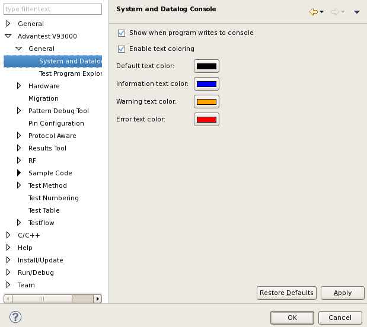

System and Datalog Console preference page
You can change the following preferences on the preference page.
Option |
Description |
|---|---|
Show when program writes to console |
Use this option to bring the data log console to front when the program writes to it. |
Enable text coloring |
Text coloring in the two consoles is on by default. (You can switch it on or off using a console toolbar button.) |
Default text color |
Specify the default text color when text coloring is on. |
Information text color |
Specify the color of the information text when text coloring is on. |
Warning text color |
Specify the color of the warning text when text coloring is on. |
Error text color |
Specify the color of the error text when text coloring is on. |
The following displays the System and Datalog Console preference page.

Functional changes
- Introduced before SmarTest 6.3.2
- SmarTest 7.1.3: (Release 7.1.3.2) Added Enable text coloring and Default text color options